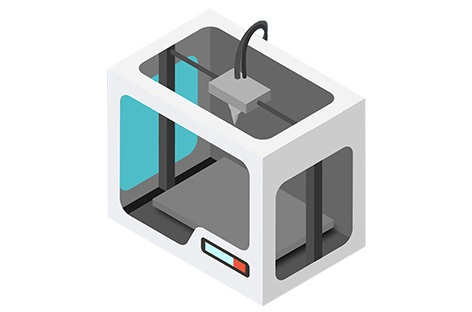

This workshop would focus on familiarizing the participants belonging to all Engineering disciplines about additive manufacturing technology domain and a ‘big picture’ regarding, applications of 3D Printing in bio-manufacturing sectors (including other wide applications), recent modifications in 3D printing technology and future scope of 3D printingwith various career perspective.
Date: 2nd March 2017 in Industrial Auditorium (8:30 am onwards)
• Participation fees – Rs. 700/ head (individual participation).
• Venue – Industrial Auditorium, RCOEM.
• Date – 2017,march 2
• Duration – 9:30 am to 5:00 pm.
• Participants will receive 'Certificate of Participation', after attending workshop.
• Prerequisites – No
• Expected no. of participants – 50 or more (up to 100).
• Who can participate:
- Students belonging to all engineering disciplines.
- Medical/Biomedical students.
- Technology enthusiast.
1) Introductory lecture on Additive Manufacturing (2 hrs.)
• Introduction to Rapid prototyping
• Introduction to different types of 3D printers
• Materials used for printing
• Introduction about G-codes and basics of .stl and .obj file format.
2) Emerging frontiers in research and innovation in bio-manufacturing. (2 hrs.)
3) Recent development in Additive manufacturing (1 hr.)
• Advance materials for printing
• Emerging 3D printing technologies
• Applications of 3D printing
• Future perspective and career opportunities.
4) Live demonstration and hands-on experience on 3D Printer ‘JULIA’ by ‘FRACKTAL WORKS’ (2 hrs.)
• ShubhamOza – 9561444306
• MayankSoni – 8055842719/8446625526.